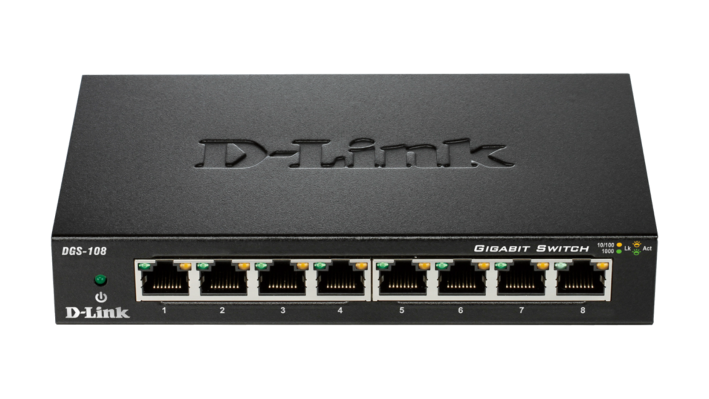

La partie phyisque
Comme dit précédemment, un réseau local est composé de deux partie : la partie physique et la partie logiciel. On étudiera ici la partie physique.
Reliez des ordinateurs entre eux
Déja, pour que des machine communiquent entrent eux, ils faut qu'il soit relier entre eux. Ont vas donc commencez par présenter les cables
Les cables
Le moyens le plus simple ( d'un point de vue technique ) de connecté un ordinateur avec un autre est tout simplement les cables.
Les cables coaxiaux simple
Ce type de cables est trés ancien. C'est simplement un cable, enroulé autour d'un isolant. Autour de cet isolant se situe un maillage de masse. Il est finalement protégé par un isolant externe.
C'est cable ne sont pas pratiques, pour la simple et bonne raison qu'ils sont difficile é installer. C'est pourquoi ce types de cables n'est plus ( ou preque ) utilisé
Les cables coaxiaux croisée
Cependant, il existe un dérivé des cables coaxiaux simple : les cables coaxiaux é paire torsadé ( aussi connus sous le nom de cable coaxiaux croisé ). C'est le type de cables utilisé dans une grande partie des cables pour relier des ordinateurs sur des réseau locaux.
Ils sont équipé de 8 fils, mais, dans les utilisation habituelle de ce cable, seul 4 fils sont utilisé : deux pour recevoir, et deux pour envoyer. Pour connecter plusieurs ordinateurs, ont utilise couramment la prise RJ45.
La WIFI
La wifi est un moyens de connecter des appareil informatique entre eux sans cables. Il utilise pour cela la radio.
La connection
Pour que plusieurs ordinateurs puissent communiquer ensemble, il faut les connecter ensemble. On peut simplement connecter deux ordinateurs par un cable, mais avec trois, quatre, cinq, ou plus d'ordinateur é connecter entre eux, il faut des passerelles.
Le Switch
La Switch est un appareil, muni ( habituellement ) de plusieurs prise RJ45, est d'un processeur, qui permet d'optimiser le réseau, en envoyer a un ordinateur uniquement ce qui lui est destiné.
Le Hub
Le Hub permet de connecté plusieurs cable ensemble, mais, contrairement é la switch, n'est pas équipé d'un processeur, du coups, tout les ordinateurs recoive tous les messages, ce qui n'est pas trés pratique ( et en plus, pas sécurisé ).